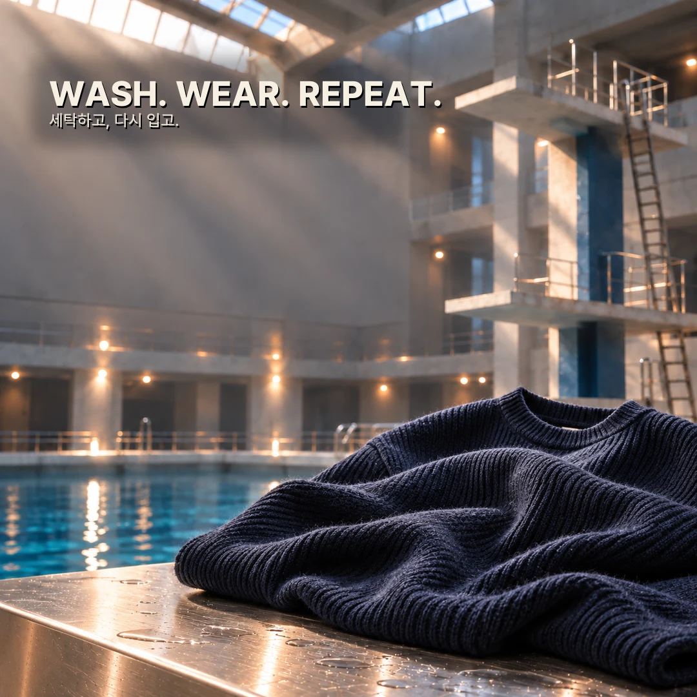
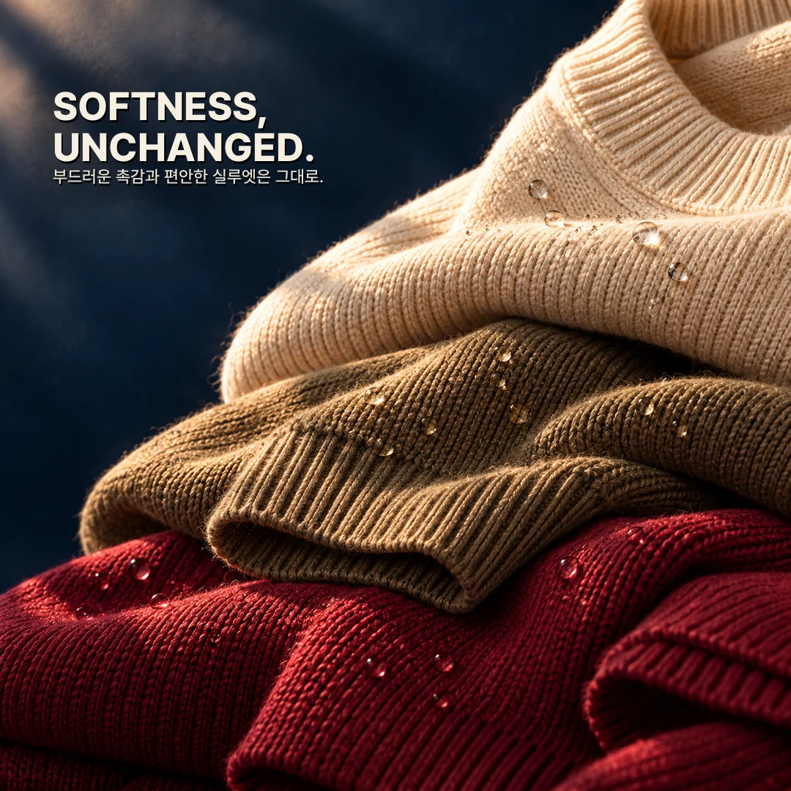
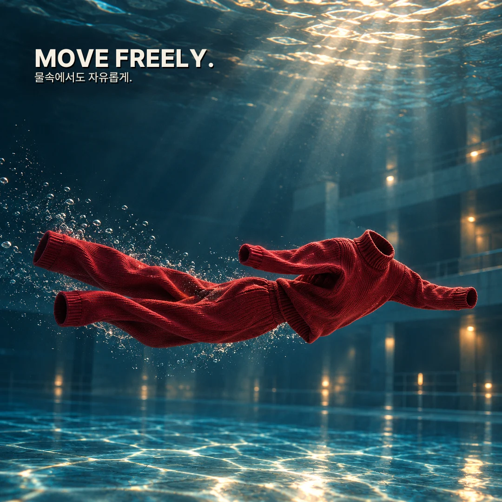
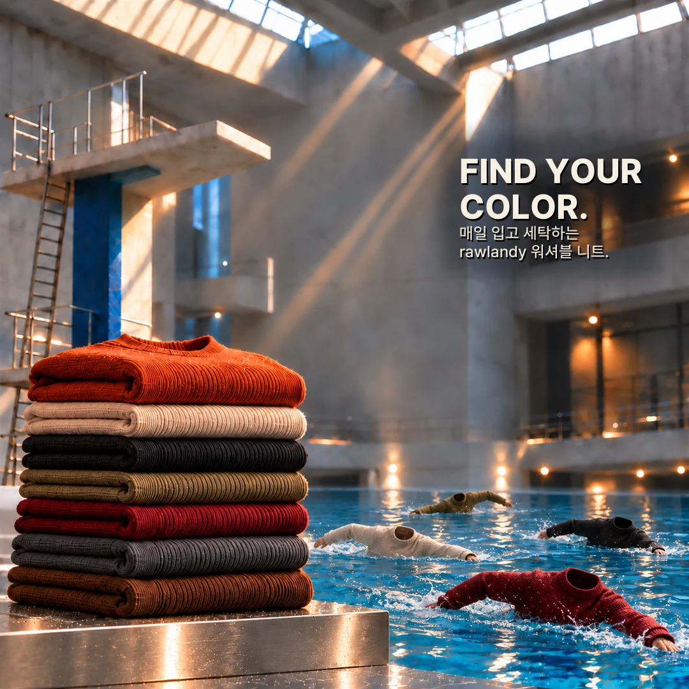

MADE TO BLEND.01 / THE AUTUMN EDIT
자주 손이 가는 옷은,
일상에 스며드니까.
조금 서늘해진 아침, 익숙한 데님 위에.
가벼운 외출부터 느긋한 주말까지.
가을의 여러 장면을 rawlandy의 시선으로 담았습니다.
01 / Campaign film
Take the plunge.
물과 빛, 그리고 니트.
익숙한 소재를 새로운 장면으로 만납니다.
WASH. WEAR. REPEAT.영상 파일 열기 ↗

03 / In motion익숙한 옷에,
익숙한 옷에,
새로운 시선.
물속을 유영하는 니트의 움직임으로
매일 입는 옷을 새롭게 바라봅니다.
물속 장면은 캠페인의 시각적 연출입니다.
실제 세탁 방법은 제품별 케어 라벨을 확인해 주세요.

04 / PaletteFind your
Find your
autumn color.
차분한 네이비부터 따뜻한 브라운,
깊이 있는 버건디까지.
내 옷장에 더하고 싶은 가을의 색.
캠페인 이미지의 컬러 구성입니다. 실제 출시 색상은 확정 후 안내됩니다.

05 / Before you choose니트를 만나기 전,
니트를 만나기 전,
궁금한 이야기.
워셔블 니트는 어떻게 세탁하나요?
제품별 소재와 가공 방식에 따라 세탁 방법이 달라집니다. 이 캠페인은 기획 시안이며, 세탁기 사용 가능 여부·수온·건조 방법은 제품 사양과 케어 라벨 확인 후 안내할 예정입니다.
사이즈와 소재는 어디서 확인하나요?
실제 제품의 소재 혼용률과 실측 사이즈는 확정 후 제품 안내에 추가할 예정입니다. 현재 이미지와 영상은 브랜드 캠페인 콘셉트입니다.
지금 구매할 수 있나요?
현재는 가상 브랜드 프로젝트로 결제 기능을 제공하지 않습니다. Collection에서 rawlandy가 제안하는 스타일과 제품 구성을 둘러볼 수 있습니다.
Your everyday.
A little warmer.
익숙한 옷장에, 가을 한 겹.
Collection 둘러보기